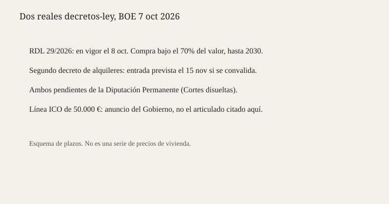

Madrid · vivienda · 8 de octubre de 2026
El Real Decreto-ley 29/2026 de vivienda entró en vigor pendiente de la Diputación Permanente
_01.jpg)
Lo que coinciden las fuentes
El Boletín Oficial del Estado del 7 de octubre de 2026 publicó el Real Decreto-ley 29/2026, de 6 de octubre, por el que se adoptan medidas urgentes para la protección de la función social de la vivienda y la ampliación de la oferta de vivienda asequible. La ficha del BOE fija la entrada en vigor en el 8 de octubre de 2026. La Moncloa, en una nota del 8 de octubre, dice que el Consejo de Ministros del 6 de octubre aprobó dos reales decretos-ley: este, ya en vigor, y un segundo sobre estabilidad de los contratos de arrendamiento de vivienda habitual, cuya entrada en vigor quedaría el 15 de noviembre de 2026 si se convalida. Las Cortes están disueltas por la convocatoria electoral del 29 de noviembre. La convalidación corresponde a la Diputación Permanente, no al Pleno.
El núcleo publicado, y repetido por La Moncloa y por el propio preámbulo del BOE, limita hasta el 31 de diciembre de 2030 la compra de vivienda por debajo del 70 por ciento del valor de mercado, tasado por una sociedad independiente. El límite alcanza a sociedades, fondos y otras entidades cuyo objeto sea adquirir inmuebles o carteras de préstamos hipotecarios impagados, y a quienes tengan la condición de gran tenedor. El BOE habla de adquisición a título oneroso o gratuito por un precio inferior a ese 70 por ciento. No es una prohibición general de comprar vivienda. Es un suelo de precio para un tipo de comprador.
La Moncloa describe además una suspensión de desahucios, hasta la misma fecha de 2030, cuando quien desahucia es una entidad dedicada a comprar inmuebles o carteras por debajo del valor de mercado y el ocupante cumple condiciones que la nota enumera. Esas condiciones hay que leerlas en el texto, no en un titular. Onda Cero resume una batería de 21 medidas y recoge el anuncio de una línea ICO de 10.000 millones y préstamos de hasta 50.000 euros sin intereses para la primera vivienda, aplazables hasta terminar la hipoteca. Ese préstamo es un anuncio del Gobierno recogido por la emisora. No está verificado aquí como artículo ya ejecutable del RDL 29/2026.
Lo que es solo una cita
El preámbulo cita al Centro de Investigaciones Sociológicas para decir que la vivienda es el principal problema. Es una motivación política del decreto, no una medición nueva del 8 de octubre. Pedro Sánchez ha presentado el paquete como protección frente a la especulación. La oposición lo ha tratado, en la cobertura de estas horas, como uso electoral de la vivienda después de la muerte de Maricarmen, un caso de desahucio que el archivo de este sitio ya registró en septiembre. Ninguna de las dos frases convierte el decreto en nulo o en convalidado. La convalidación es un voto que todavía no consta en el BOE.
El segundo decreto, el de prórroga de alquileres, es el que Onda Cero señala como el más rechazado por formaciones como el PNV o Coalición Canaria. Ese rechazo es una posición de partido. No es el recuento de la Diputación Permanente. Hasta que esa mesa vote, el calendario legal es el que publica La Moncloa: el 29/2026 ya rige; el de arrendamientos espera al 15 de noviembre y a la convalidación.
El mecanismo que hace falta
Un real decreto-ley es una norma del Gobierno con rango de ley, prevista para una necesidad extraordinaria y urgente. Entra en vigor al publicarse, o en la fecha que ella misma fije, y decae si el Congreso no la convalida en treinta días. Con las Cortes disueltas, ese papel lo hace la Diputación Permanente, un órgano reducido que sobrevive a la disolución. Por eso el decreto puede estar en vigor esta mañana y seguir siendo provisional. Quien compre o desahucie hoy bajo la norma nueva asume el riesgo de que la Diputación no la convalide y de que los efectos ya producidos tengan que desenredarse. Ese riesgo es jurídico, no retórico.
El umbral del 70 por ciento está pensado contra la compra de carteras a descuento, un negocio en el que un fondo adquiere créditos o pisos muy por debajo de la tasación y luego ejecuta. Poner un suelo no crea vivienda. Cambia el precio mínimo de una operación concreta. Si el vendedor no acepta ese suelo, la operación no se cierra. Si la tasación es discutible, el límite también lo es: el decreto remite a una sociedad de tasación independiente, pero no elimina el litigio sobre el valor. Los desahucios suspendidos solo en ciertos supuestos dejan fuera otros lanzamientos. Contar “21 medidas” sin separar las que ya obligan de las que son crédito anunciado mezcla un BOE con una rueda de prensa.
El contexto electoral importa para el procedimiento, no para el contenido. El 29 de noviembre hay elecciones generales. Un decreto-ley en vísperas de una campaña es legal si cabe en la figura de la urgencia, y es políticamente disputable precisamente por eso. El archivo de este sitio ya anotó, el 2 de octubre, que el Congreso rechazó dos decretos de vivienda anteriores. El paquete del 6 de octubre es un segundo intento, con cambios que Onda Cero llama ligeros respecto de los textos tumbados. La diferencia de procedimiento es la Diputación Permanente, no un Pleno recién elegido.
La muerte de Maricarmen explica parte del lenguaje de estos días y no sustituye el articulado. Un caso individual puede motivar una norma. No demuestra que cada suspensión de desahucio del decreto se le habría aplicado, ni que la norma evite el siguiente caso. Para eso haría falta el supuesto de hecho del artículo y la situación registral de esa vivienda. Aquí no consta.
Lo que la noticia no es
No es una convalidación. No es una serie de precios del alquiler. No es la prueba de que el préstamo ICO de 50.000 euros ya se pueda pedir en una sucursal. La fotografía es un edificio de Madrid de archivo, no el BOE y no un bloque afectado. El esquema inferior ordena plazos publicados, no una estadística de compraventas.

Artículos de origen y puntuaciones
El BOE es el texto, no un árbitro neutral del problema: el preámbulo argumenta. Por eso la complicidad no está en 100. La Moncloa resume a favor del Gobierno. Onda Cero separa mejor la entrada en vigor del anuncio del ICO, y aun así agrupa 21 medidas de dos normas distintas.